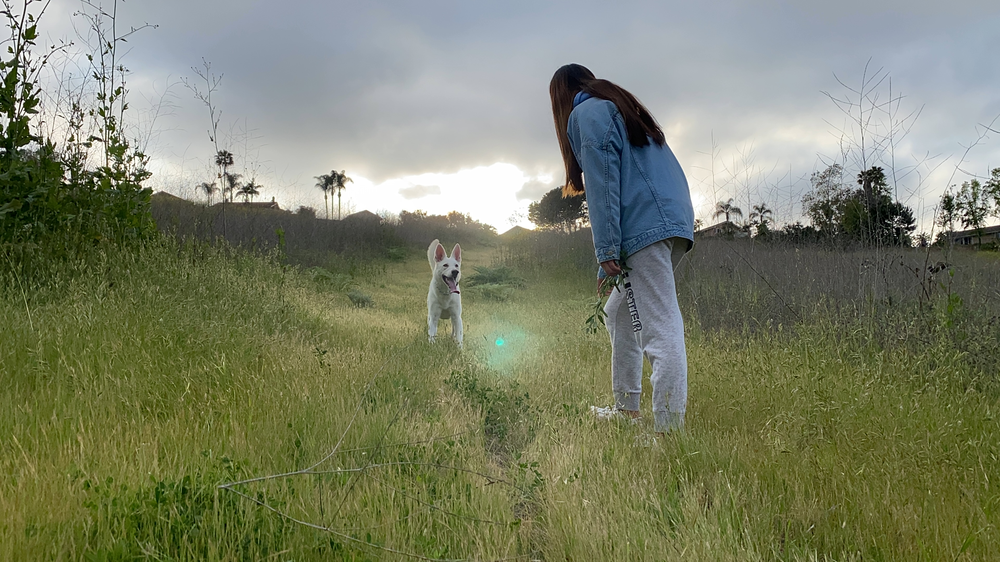
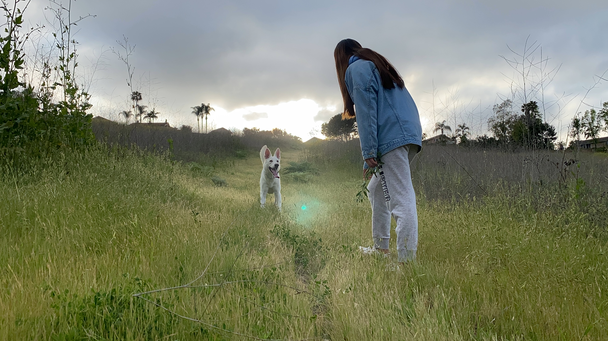

Olivia Chen
I am most interested in the administrative internship sites because as a double majoring in Biology and Economic Administration Studies (concentration in Management Information Systems). My short-term goal is to pursue a higher education degree related to the healthcare field. With my economic background in management information systems, I want to apply these skills to healthcare technology management and implementation. Therefore, I am looking for more opportunities to engage in different fields to open my mind to more areas inside healthcare. To find and create a straightforward pathway for my future career and be able to have the best outcome after the program.
I have a clear vision for my career goals and a strong passion for positively impacting the healthcare industry. My career goals include pursuing research in the field of Biotechnology and involving in the healthcare administration field to help the organization provide top-quality treatment and care experience for the patient. Also, it can offer significant opportunities for me to contribute to developing the advancement of medical treatments and technologies. To pursue my career goals, I want to explore opportunities in healthcare management or leadership roles where I can use my skills and knowledge to implement strategies that improve patient outcomes and enhance the overall quality of care.
I have a passion for finding ways to make medical treatments more accessible and affordable for patients who may be facing financial barriers. Financial is a critical issue in the healthcare industry, and there is a great need for innovative solutions to address it. Therefore, my career can provide more opportunities for people to have higher quality medical care and also provide their medical needs. For further planning, I want to specialize my research in the knowledge of cancer field. Statistical data in the U.S. showed an estimated 1.9 million new cancer cases and nearly 0.6 million cancer deaths. However, not all patients can afford medical treatments on time or diagnose with cancer at the beginning stage. Therefore, I want to accomplish this throughout my career to improve and provide an affordable medical checking system to help patients receive the treatment they need.
Experience
Medical Assistance Intern
• Assist nurses and medical staff in ensuring patient comfort through conversation and general care.
• Ordered and administered various medical tests. Restocked, organized, and delivered surgery supplements.
• Maintained surgical logbooks, sorted patient information, and recorded patients’ health conditions during the operation. Learned basic medical terminology and gained experience in surgery procures.
Executive Assistant
• In charge of implementing board-member meetings, analyzing industry development competition, and deciding how to innovate the enterprise services based on the feedback from social media.
• Perform administrative tasks and closely assisted the chairman (a register accountant)'s work.
Community Outreach Intern
• Participated in urban health management. Help the organization develop, organize, and implement health plans for the community.
• Engaged particularly in ensuring the safety and well-being of the district's elderly population (with focus on medical/ health conditions).
Education
University of California Riverside
University of California Riverside
Portfolio


